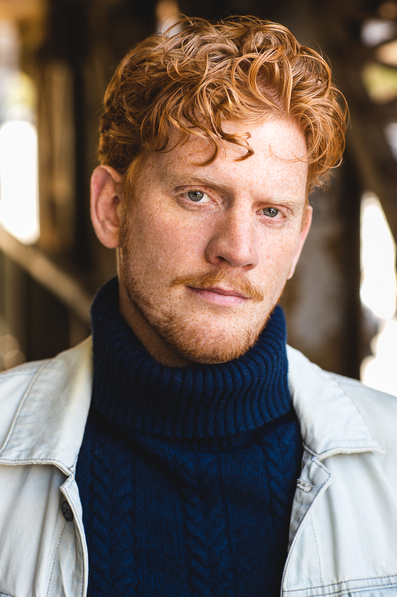
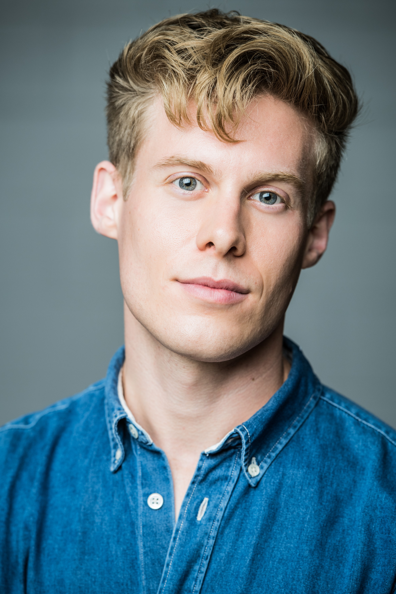
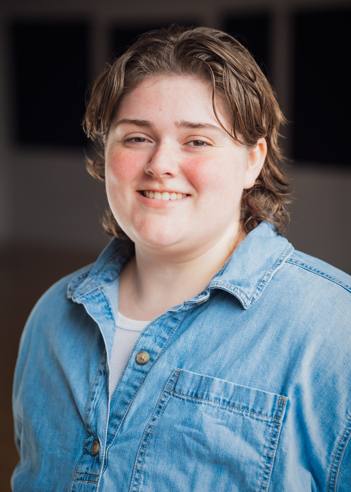
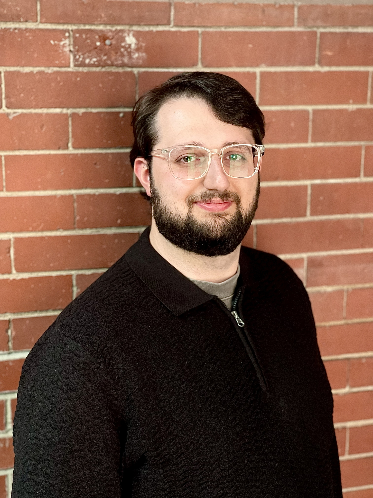

Kenzie Delo – Playwright; Role of Levin
Kenzie Delo is an Atlantic Canadian actor, singer, and writer from Nova Scotia. Kenzie received his BA from Dalhousie University’s Fountain School of performing arts before graduating from the National Theatre School of Canada’s acting program. Since then, Kenzie has represented Canada on the world stage in a European tour of Stephen Massicotte’s Mary’s Wedding, performing in three cities in Germany and the Canadian Embassy in Paris, France; he has returned on several occasions to perform in Atlantic Canada; and he has appeared in several screen roles, most notably as Constable Tucker across fifteen episodes of CBC/UKTV’s Murdoch Mysteries. Kenzie is thrilled that you have joined us for Here Be Dragons, and cannot wait to share this journey with you.
Selected Theatre: The Bees Knees (Tall Poppy Productions); Waiting for Godot; Hedda Gabler; No Man is an Island; Mary’s Wedding (Atlantic Repertory Company); Miss Bennet: Christmas at Pemberley; The Wickhams: Christmas at Pemberley (Theatre New Brunswick); Chloe=Catalyst (Culchahworks Arts Collective). Selected Screen: Murdoch Mysteries; Titans; American Gods.

Kiana Woo – Role of Helen
Kiana Woo (she/her) is a queer, Dora Award winning, Chinese-Canadian actor, mover and creator with a special love for clown, physical theatre, and classical works. She attained her BFA in Acting from the University of Alberta and has since worked across Canada. Kiana has also been an ensemble member for the Shaw Festival and is a graduate of the Soulpepper Academy. She creates her own work, in clown, cabaret and devised creation. She is thrilled to be playing the role of Helen in Here Be Dragons alongside this incredible team. She sends love to her friends, family, and her wonderful partner, Alex. Instagram: @_kikibird
Selected Theatre: Murder on the Orient Express (Theatre Aquarius), The 39 Steps (Guild Festival Theatre), Les Zinspiré·e·s 12 : le nombre sublime (Théâtre français de Toronto), A Chistmas Carol, Prince Caspian, The Playboy of The Western World (Shaw Festival), Peggy Pickit Sees The Face of God, King Lear (Soulpepper), The Fiancée (Citadel Theatre), Inga and The Date (Play The Fool), Alice in Wonderland (Guild Festival Theatre), Cymbeline (Shakespeare Bash’d), E-Day (Theatre Network), The Two Gentlemen of Verona (Theatre Calgary).
Danik McAfee – Director
Danik McAfee is a Two-Spirit, Algonquin-mixed and French-Canadian director and actor working across Canada in both French and English. With over a decade of professional experience, Danik is drawn to bold, character-driven storytelling and collaborative processes that centre underrepresented voices on stage.
A graduate of the National Theatre School of Canada’s Directing Program, Danik trained under acclaimed artists including Jillian Keiley, Micheline Chevrier, Eda Holmes, and Jackie Maxwell. They also hold diplomas in Musical Theatre Performance from Collège Lionel-Groulx and Randolph College for the Performing Arts. Selected credits include: On Native Land (Urban Ink, Assistant Director), On Thin Ice (Magnus Theatre, Caleb), Les Zinspiré(e)s 13: À la Lumière des Treize Lunes (Théâtre Français de Toronto, Director), Significant Other (CCPA, Director), Come From Away (Gander, Associate Director), Les Zinspiré.e.s 12: Le Nombre Sublime (Théâtre Français de Toronto, Performer), Beautiful Scars (Theatre Aquarius, Associate Director—workshop), and The Rocky Horror Picture Show (Capitol Theatre, Frank 'N' Furter).
Alex Purcell – Sound Designer
Alexander Purcell is a Toronto-based composer, producer, multi-instrumentalist, and immersive music researcher whose work brings together live performance, studio production, music education, and emerging technology. Trained to a professional level in classical piano and jazz guitar, Alex also works across bass, drums, vocals, keyboards, and programming, with extensive experience in recording, mixing, mastering, arranging, and building vivid sonic worlds for artists and audiences alike. A Humber College Bachelor of Music graduate who has taught piano and guitar for years, performed in multiple ensembles across the GTA, and toured Europe through a Canada Council Touring Grant, he brings both depth and versatility to every project. Alex is also a PhD candidate in Community Music at Wilfrid Laurier University, where his research explores virtual reality, autism, and immersive musical engagement—work that directly informs his role in Here Be Dragons, where he shapes sound as a physical, emotional environment, drawing audiences into the claustrophobic wonder of a submerged vessel and the immense pressure of the deep sea.

Christian Horoszczak – Lighting Designer
Christian Horoszczak is a Toronto based lighting designer. Previous designs include: The Division (Project: Humanity), Mary, Mary, Mary, Mary; The Bidding War; Bad Roads (Crow’s Theatre); Liars at a Funeral (Drayton Entertainment); Doubt: A Parable (Thousand Islands Playhouse); Trayf (Harold Green Jewish Theatre); All The Sex I’ve Ever Had – Tokyo, Seoul, Zurich, Hannover, Montreal, and Sydney World Pride Editions; Sex, Drugs and Criminality – Riga Edition (Mammalian Diving Reflex); Three Sisters; Entrances and Exits (Howland Company); Night/Shift 2025 (Citadel+Compagnie/FFDN). Associate/Assistant lighting design: Stratford Festival, Mirvish Productions, Fall For Dance North, Manitoba Theatre Centre, Volcano. He is the recipient of a Dora Award for his work on Bad Roads. Christian also works in museum lighting design, having collaborated on exhibitions with Dior, the Black Gold Museum, the Canadian Canoe Museum, and the Forbidden City.

Alex Joyce – Stage Manager
Alex (they/them) is a Toronto-based stage manager from the Goulds, Newfoundland (Ktaqmkuk, unceded traditional Beothuk & Mi’kmaw territory). They are a graduate of the National Theatre School of Canada and Memorial University of Newfoundland and Labrador. Some of Alex's recent credits include: The Neighbours (Tarragon Theatre & Green Light Arts), Charles Dickens Writes A Christmas Carol (Theatre Baddeck), Pelléas et Mélisande, The Magic Flute (Opera Atelier), Come From Away (You Are Here Inc. 2023-25), Jane Eyre, The Government Inspector, Deadline, Attempts On Her Life, Antigonick, As You Like It, Metamorphoses (National Theatre School of Canada), The Tempest, Hay Fever (Perchance Theatre), She Kills Monsters (Memorial University of Newfoundland).

Yoan Holder – Production Manager
Yoan Holder is a Toronto-based production manager, technical director, and technician. A graduate of the Performance Production program at Toronto Metropolitan University, his selected past and recent credits include Comedy is Art, MONKS, and Broken Shapes, as well as work with The Theatre Centre team. He is excited to be joining the Here Be Dragons team for this production at The Theatre Centre.